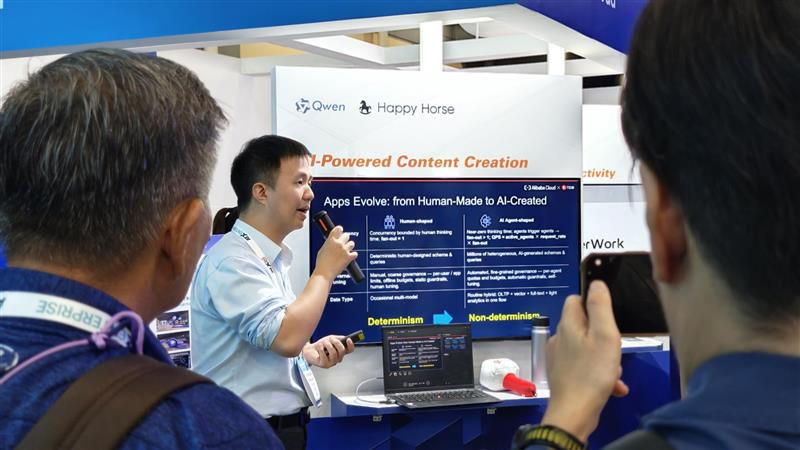

← All work
From AI possibility to personal experience.

Start with the audience.
Make AI tangible for visitors rather than leaving it as a technical promise.
Give the idea a different way in.
The retained AI Business Card Studio story connects custom technology, creative development, live print and event operations. The experience gives the technology a human point of entry.
- Digital experience
- Creative development
- Live production
- Audience participation
Carry the moment forward.
A practical example of digital and physical production working together. No award, visitor-volume or commercial-result claim is made in this draft.
What needs to move
for your audience?
Start a related project ↗Internal content review: this copy and media remain subject to final case approval. See source and approval notes.